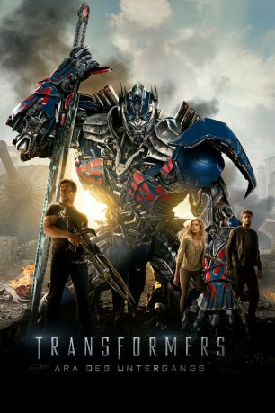

Alternativ: Transformers: Age of Extinction
 
 IMDB-Wertung: 5.7 / 10
IMDB-Wertung: 5.7 / 10  Metascore:
Metascore: 
Die Menschheit hat sich gerade von der großen Schlacht zwischen Autobots und Decepticons auf unserem Planeten erholt. Alle Transformers sind vom Antlitz der Erde verschwunden, doch geldgierige und mächtige Geschäftsmänner und Wissenschaftler hoffen von ihrer Hinterlassenschaft profitieren zu können. Sie experimentieren mit der Technologie der Transformers – weit über ein Maß hinaus, das sie kontrollieren können. Gleichzeitig hat ein alter und mächtiger Transformer von weit her, sein Augenmerk auf die Erde gerichtet, die er versklaven will. Ein neuer Kampf um die Freiheit der Menschen beginnt…
Jahr: 2014
Dauer: 165 Minuten
FSK: 12
Land: USA Studio: Paramount PicturesTonspuren: DD5.1 - ,
Untertitel: Deutsch, Englisch,
Auflösung: 1080p (1920x1080) Größe: 11161 MB
Genre: Action, Sci-Fi, Abenteuer
Regisseur:  Michael Bay
Michael Bay
Drehbuch: Ehren Kruger
Soundtrack: Steve Jablonsky
Darsteller:
 Mark Wahlberg als Cade Yeager
Mark Wahlberg als Cade Yeager Stanley Tucci als Joshua Joyce
Stanley Tucci als Joshua Joyce Kelsey Grammer als Harold Attinger
Kelsey Grammer als Harold Attinger Nicola Peltz als Tessa Yeager
Nicola Peltz als Tessa Yeager Jack Reynor als Shane Dyson
Jack Reynor als Shane Dyson Titus Welliver als James Savoy
Titus Welliver als James Savoy Sophia Myles als Darcy Tirrel
Sophia Myles als Darcy Tirrel Bingbing Li als Su Yueming
Bingbing Li als Su Yueming T.J. Miller als Lucas Flannery
T.J. Miller als Lucas Flannery Thomas Lennon als Chief of Staff
Thomas Lennon als Chief of Staff Charles Parnell als CIA Director
Charles Parnell als CIA Director Richard Riehle als Theater Landlord
Richard Riehle als Theater Landlord Patrick Bristow als Landlord's Grandson
Patrick Bristow als Landlord's Grandson Cleo King als Realtor
Cleo King als Realtor David Midthunder als Arctic Site Guard
David Midthunder als Arctic Site Guard Andreas Beckett als KSI Scientist
Andreas Beckett als KSI Scientist Mikal Vega als Cemetery Wind Team
Mikal Vega als Cemetery Wind Team Kenny Sheard als Cemetery Wind Team
Kenny Sheard als Cemetery Wind Team Kevin Kent als Cemetery Wind Team
Kevin Kent als Cemetery Wind Team Michael Wong als Hong Kong Police Chief
Michael Wong als Hong Kong Police Chief Peter Cullen als Optimus Prime
Peter Cullen als Optimus Prime Frank Welker als Galvatron
Frank Welker als Galvatron John Goodman als Hound
John Goodman als Hound Ken Watanabe als Drift
Ken Watanabe als Drift John DiMaggio als Crosshairs
John DiMaggio als Crosshairs Mark Ryan als Lockdown
Mark Ryan als Lockdown Reno Wilson als Brains
Reno Wilson als BrainsDatei: X:\6-Hexalogie(A-Z)\Transformers\Transformers 4 - Ära des Untergangs (2014, FSK12, 1920x1080) 3D.mkv seit 21.02.2015
Festplatte: HD Collection-3(N-Z)-6(A-Z)
 Es gibt insgesamt 12 Filme in der Gruppe '6-Hexalogie(A-Z)\Transformers'
Es gibt insgesamt 12 Filme in der Gruppe '6-Hexalogie(A-Z)\Transformers'